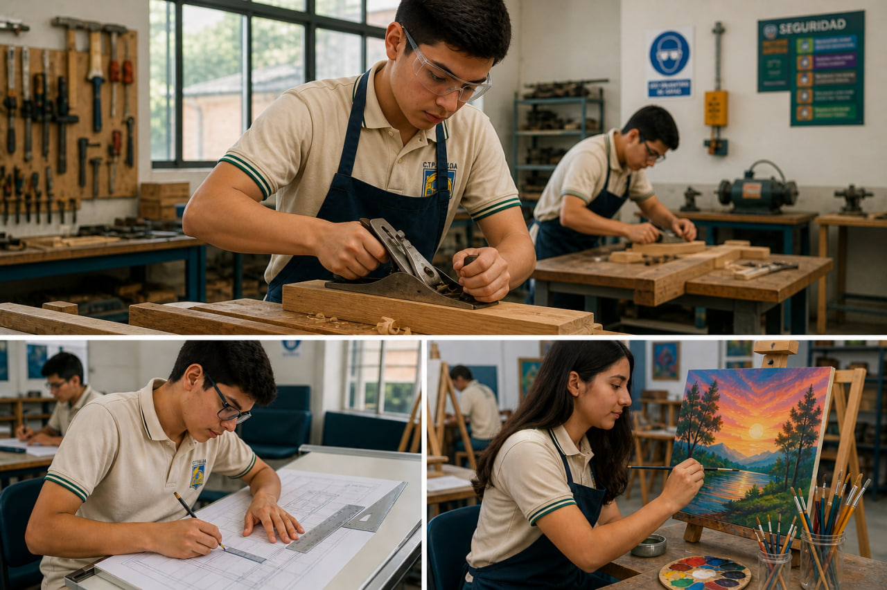

Humanismo
Desarrolla valores y conductas para que cada estudiante ejerza sus cualidades personales y ciudadanas en beneficio propio, de la comunidad y del entorno natural.

Oferta Educativa
III Ciclo y Ciclo Diversificado Vocacional: una ruta inclusiva de seis a├▒os que fortalece autonom├¡a, habilidades para la vida, formaci├│n t├®cnica y preparaci├│n para una actividad productiva o laboral.
Enfoque del programa
El Plan Nacional se fundamenta en la Política Educativa hacia el Siglo XXI y articula humanismo, racionalismo y socio constructivismo. Desde esta base, el aprendizaje se construye con apoyos graduados, experiencias significativas y atención a las características de cada estudiante.
La propuesta comprende la importancia de una educación inclusiva para estudiantes con discapacidad física, cognitiva o intelectual, priorizando fortalezas, niveles de independencia, necesidades de apoyo y oportunidades reales de participación social y laboral.
Se desarrolla como servicio de atenci├│n directa de Educaci├│n Especial, con el prop├│sito de potenciar la independencia, preparar para una actividad productiva o laboral y abrir posibilidades de continuidad en otras ofertas formativas.
El programa brinda ambientes de aprendizaje que combinan comunicación, desarrollo personal, habilidades prácticas y formación para el trabajo, de acuerdo con las necesidades particulares del estudiantado.
Bases pedag├│gicas
Desarrolla valores y conductas para que cada estudiante ejerza sus cualidades personales y ciudadanas en beneficio propio, de la comunidad y del entorno natural.
Reconoce la capacidad del estudiante para construir y reconstruir conocimientos que le permitan comprender su realidad y avanzar en aprendizajes para la vida.
Promueve la interacci├│n con la realidad, el acompa├▒amiento docente y los apoyos diferenciados como parte esencial del proceso de aprendizaje.
Malla curricular
El plan de estudios integra ├íreas acad├®micas, habilidades psicomotrices, destrezas t├®cnicas y formaci├│n socioafectiva, orientadas a la vida personal, productiva y comunitaria.
Espa├▒ol, Matem├íticas, Ciencias, Estudios Sociales, Ingl├®s, Habilidades y Destrezas, Educaci├│n F├¡sica, Educaci├│n Musical, Artes Pl├ísticas, Formaci├│n Tecnol├│gica, Educaci├│n Religiosa, Orientaci├│n y Clase Gu├¡a.
Mantiene las asignaturas acad├®micas, art├¡sticas, f├¡sicas, tecnol├│gicas, religiosas, de orientaci├│n y de acompa├▒amiento mediante Clase Gu├¡a.
Gesti├│n microempresarial e Ideando mi peque├▒o negocio.
Para optar por el título, el estudiantado de 11° realiza una pasantía de 40 horas y el de 12° una práctica supervisada de 320 horas en empresa.
Poblaci├│n meta
Requisitos
Objetivos
Fortalecer habilidades y destrezas para lograr mayor autonomía, autodeterminación e independencia.
Promover el desarrollo cognitivo y la adquisici├│n de aprendizajes ├║tiles para la vida.
Avanzar en contenidos acad├®micos vinculados con la oferta educativa nacional.
Potenciar intereses, aptitudes, destrezas y habilidades para la formación vocacional, pasantía y práctica supervisada.
Favorecer la participaci├│n plena en actividades del centro educativo, la familia y la comunidad.
Impulsar carreras t├®cnicas, proyectos productivos, microempresas, trabajo cooperativo y alternativas socioproductivas.
Certificaci├│n y titulaci├│n
Al finalizar duod├®cimo a├▒o, los estudiantes reciben el Certificado de Conclusi├│n de Estudios. Este se complementa con un Informe de Salida de Ciclo que describe los conocimientos, destrezas y habilidades adquiridas en el ├írea acad├®mica y t├®cnica.
Acompa├▒amiento institucional